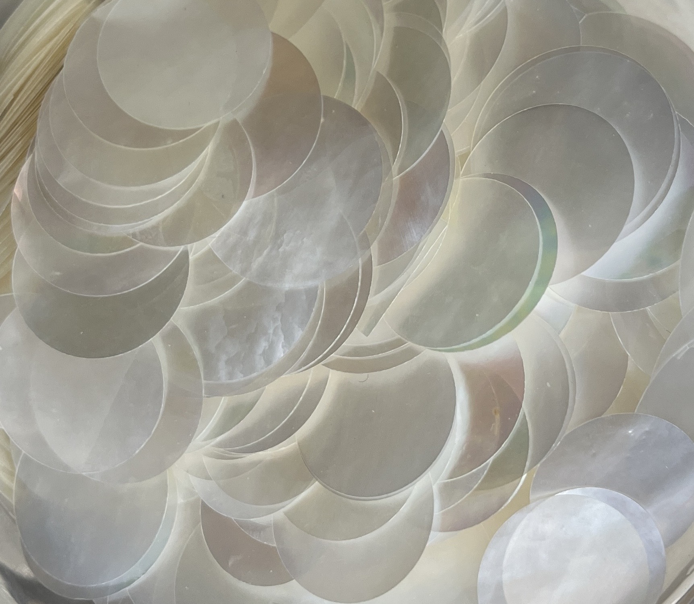
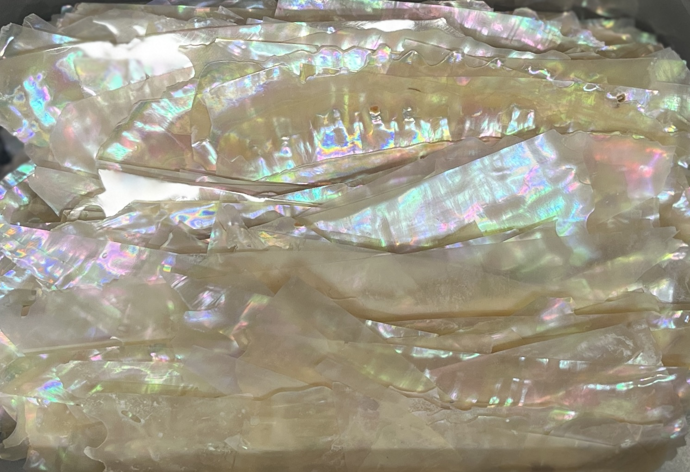
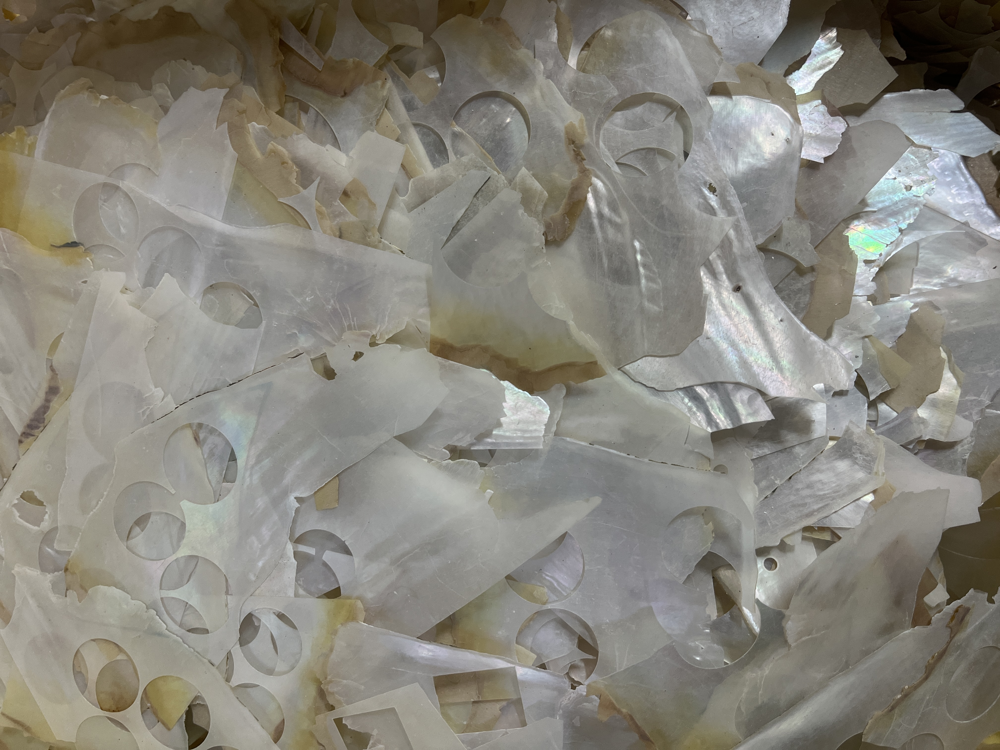

상품 갤러리
심플한 갤러리 레이아웃 — 관심 상품은 ‘상세보기’ 후 ‘연락하기’로 바로 문의하세요.

자개 시계판
30년 장인이 가공한 고급 자개 시계판.

자개 파우더 White (50g)
공예용 미세 파우더. 혼합·코팅용으로 적합합니다.

자개 파우더 Yellow (50g)
공예용 미세 파우더. 혼합·코팅용으로 적합합니다.

자개 조각 재료 (믹스)
DIY용 다양한 크기의 자개 조각 세트. 소량 및 대량 포장 가능.